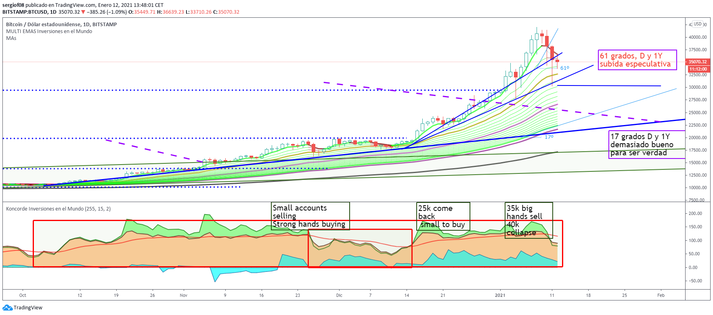

BTC desde el inicio
Despuéś de conseguir sobrepasar el canal creciente que mantenía desde marzo por encima de los 13.000 puntos ha dado lugar a un rally sin precedentes.
La directriz ha pasado de tener 12 grados a mantener más de 45 grados resultando una directriz altamente especulativa.
Muchas posiciones cortas entraron tras pasar el 1,618 de fibonacci respecto al anterior máximo de 13.000 puntos hace 2 años y correspondiente al 100% de la caída respecto a inicios de 2018. Esto hacía ya poner las alarmas encendidas ante la posible caída brusca de este activo.
En 20.000 entrarían muchas posiciones cortas que se han comido perdidas del 50% del valor en caso de no estar apalancadas, muchos ante el miedo cerrarían posiciones al cruzar los 33.000 y otros valientes las subirían. Ahora parece que el rally del BTC ha llegado a su fin pero esto no pasara hasta que no pierda con claridad los 30.000 puntos y la directriz clave que todavía no esta por perdida.
A continuación presento el gráfico del BTC desde sus inicios donde se ve como al perder la directriz alcista el BTC hizo un gran retroceso, esa directriz con un angulo tan grande es difícil que se llegase a tocar ya que indicaría que el BTC valdría los 100.000$. Además el eje es logarítmico. Pero marca un punto de inflexión, ahora el ángulo de subida irá disminuyendo según avance el tiempo.

¿Que se espera del BTC ahora tras haber batido los 40.000$?
El bitcoin ha corregido estos úúltimos 5 días cerca del 25% de los anteriores máximos y ahora esta recuperando el 50% de esa caída.
Esta puede ser la oportunidad para salirse con grandes beneficios y olvidarse un tiempo. Tras una subida exponencial que hablando del BTC todo es posible ya que no se basa en ningún activo físico sino que es un bien de mercado puramente que se intercambia libremente. Las manos fuertes lo dirigen y solo ellas saben donde va a estar en cada momento.
Se puede observar como
a partir de 20.000 mucha gente vendió sus bitcoins ante la corrección que se preveía y es que las manos débiles casi siempre se equivoca con lo que puede pasar más aun cuando tenemos algo que no es respaldado por ningún bien físico. Muchos se pondrían en corto y han sufrido grandes pérdidas ya que en 30.000 muchas cuentas en corto cerrarían posiciones y el BTC pegaría un impulso grande hasta auparlo por encima de los 40.000 puntos, En fibonacci el máximo al que podía llegar según el patrón era 45.000 pero no los ha alcanzado. El siguiente escalón ya estaría muy cerca de los 100.000$ y el riesgo siendo muy elevado.
En 25.000 nuevos pececillos o pequeñas cuentas seguirían comprando gradualmente y
es a partir de los 35.000 cuando las manos institucionales han dejado de comprar con la misma dureza y han empezado a vender como se puede ver en el indicador Konkorde.
Ahora mismo mucho ojo a perder los 30.000 y sobre todo a los 21.000 que es donde pasa la directriz alcista normal con inicio en marzo de 2020. Si quiere uno subirse con algo de seguridad recomendaría esperar a los 20.000, ya tarde 1 mes o 1 año y ahí iniciar compras pequeñas, y esperar su evolución, si cae lo más sensato sería esperar los siguientes niveles, 13.000, 10.000 y 8000.
De 8.000 no creo que baje y es ahí donde se podría meter hasta el 50% de lo que espera meter para poder meter el resto en caso de subida y que se forme un nuevo patrón de subida. En ese patrón ya habría que ir metiendo según vaya batiendo niveles y cuando se doble empezar a vender poco a poco. Es la única manera de ganar con este tipo de activos.

![[Valid RSS]](https://www.onepointsync.com/wp-content/uploads/2016/08/valid-rss-rogers.png "Validate my RSS feed")